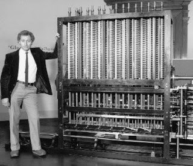
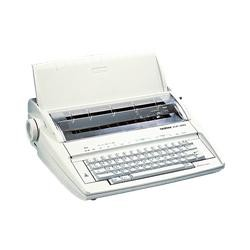

página de las impresoras
historia, la Impresora y su evolución
La historia de la impresora se remonta a la creación de la primera computadora, la máquina analítica de Charles Babbage. A pesar que el inventor nunca logró construir su PC, sí terminó los planos en los que se incluía el mecanismo de impresión. Para 1953 se crea la primera impresora eléctrica para computadoras, diseñada por Remington-Rand que solo era capaz de imprimir textos.
Primera impresora

En 1950 llega la primera impresora eléctrica para computadoras, sin embargo solo era capaz de imprimir textos. Siete años más tarde se desarrolla la impresión por matriz de puntos, pero contaba con las mismas limitaciones que su antecesor.
Computadores
impresora Marca Xerox

Ya en 1959 Xerox fabrica la primera fotocopiadora y para 1973 aparece la primera fotocopiadora a color, fabricada por Canon. En 1978 se crea la impresora de margarita, que únicamente podía escribir letras y números, pero tenía la calidad de una máquina de escribir.